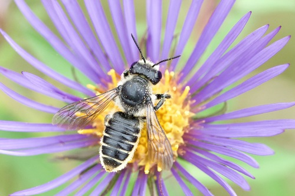

A Leafcutter Bee
Megachile relativa native bee

Solitary cavity-nester that cuts leaf discs (often from rose) to line its nest cells; strong summer pollinator of legumes and asters.
20 documented plant relationships.
sips nectar at
Arctic AsterEurybia sibiricaBee Balm (Wild Bergamot)Monarda fistulosa KENPEI, some rights reserved (CC BY)") Common SunflowerHelianthus annuus
Common SunflowerHelianthus annuus Douglas Goldman, some rights reserved (CC BY-SA), uploaded by Douglas Goldman") FireweedChamaenerion angustifolium
FireweedChamaenerion angustifolium Matt Lavin, some rights reserved (CC BY)") Hoary AsterDieteria canescens
Hoary AsterDieteria canescens Jason Sturner, some rights reserved (CC BY)") Nodding OnionAllium cernuum
Nodding OnionAllium cernuum Tom Norton, some rights reserved (CC BY), uploaded by Tom Norton") Pearly EverlastingAnaphalis margaritacea
Pearly EverlastingAnaphalis margaritacea Tom Norton, some rights reserved (CC BY), uploaded by Tom Norton") Prickly Wild RoseRosa acicularis
Prickly Wild RoseRosa acicularis Douglas Goldman, some rights reserved (CC BY-SA), uploaded by Douglas Goldman") Purple-stemmed Tall Aster (Swamp Aster)Symphyotrichum puniceumShowy AsterEurybia conspicua
Purple-stemmed Tall Aster (Swamp Aster)Symphyotrichum puniceumShowy AsterEurybia conspicua tzeducation, some rights reserved (CC BY), uploaded by tzeducation") Wild BergamotMonarda fistulosa
Wild BergamotMonarda fistulosa Ole Husby, some rights reserved (CC BY-SA)") Wild RaspberryRubus idaeusWoolly GroundselPackera cana
Wild RaspberryRubus idaeusWoolly GroundselPackera cana Douglas Goldman, some rights reserved (CC BY-SA), uploaded by Douglas Goldman") YarrowAchillea millefolium
YarrowAchillea millefolium
Common SunflowerHelianthus annuusFireweedChamaenerion angustifoliumHoary AsterDieteria canescensNodding OnionAllium cernuumPearly EverlastingAnaphalis margaritaceaPrickly Wild RoseRosa acicularisPurple-stemmed Tall Aster (Swamp Aster)Symphyotrichum puniceumShowy AsterEurybia conspicuaWild BergamotMonarda fistulosaWild RaspberryRubus idaeusWoolly GroundselPackera canaYarrowAchillea millefolium aarongunnar, some rights reserved (CC BY), uploaded by aarongunnar")